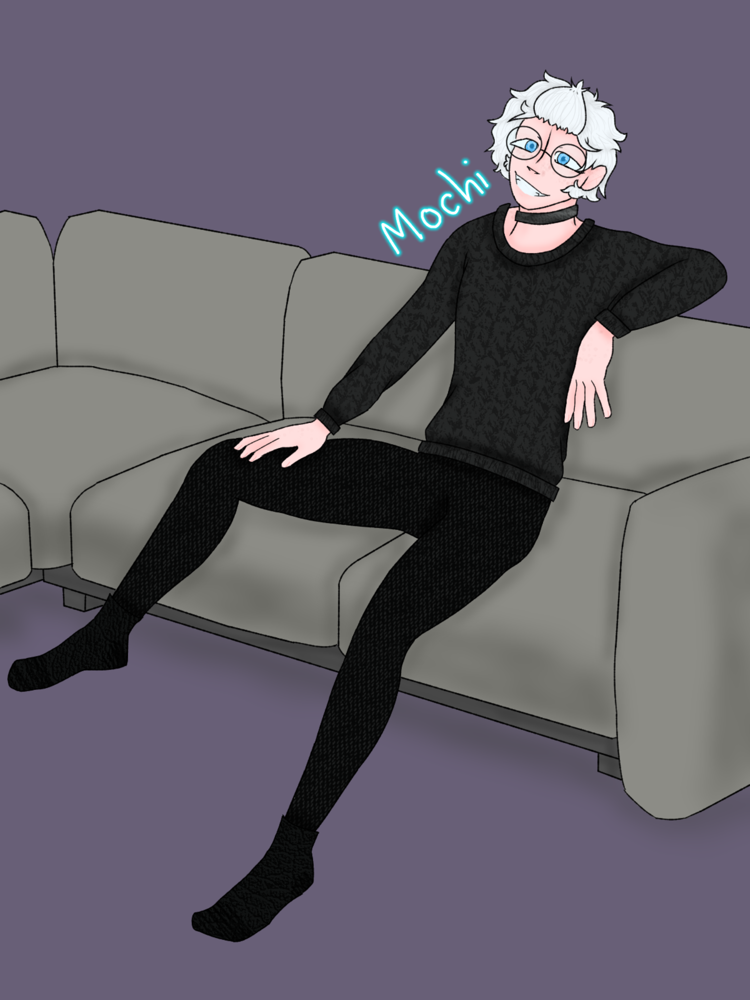

Mochi

Basics
Name
Rin Takehashi
Username
Mochi
Guild
N/A
Gender / Pronouns
Demi-Boy, He/Him/They/Their
Age
24
Orientation / Sexuality
Demisexual Panromantic
Availability
Single (Secretly has a Crush on Diice)
Personality
Mochi is a very..mischievous person. While their true voice is unknown, they excel at mimicking others. A true troublemaker. He’s lowkey mean. They enjoy using their abilities to get a reaction out of another. He truly hates people who reminds him of himself. An Example being Carmine.
Character Stats
Race / Class
Kitsune / Adventurer
Level
57
Extra Extremities
Fox Ears, and 8 Tails. he typically keeps those hidden, however.
Abilities
- Fox Fire
- Basic Visual Illusions
- Enhanced Strength + Hearing
- His voice mimicks whoever he's heard.
Weaknesses
Light Magic
Special Skills
He likes to make custom pins, buttons, shirts, and lights. It makes him happy.